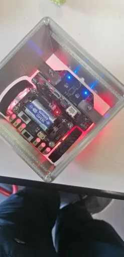

Project en milieux scolaires
PowerPlay
Robot sumo autonome

Serre connecté
Capteur Cardiaque
Apprentissage d'IA

Project personnel
Launcher Minecraft
Ce launcher permet de lancer une version modifier de Minecraft
qui permet de rejoindre un serveur dédier.